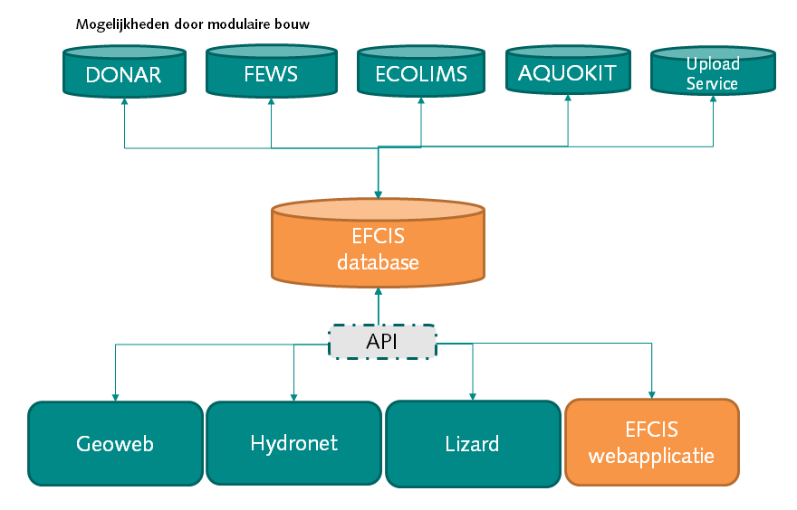

EFCIS is een gebruiksvriendelijke webapplicatie die specifiek is ontwikkeld voor de opslag, beheer, ontsluiting en analyse van ecologische en fysisch-chemische waterkwaliteitsgegevens.
Hierdoor worden de databeheerders ontzorgd én worden de (beleids-)adviseurs ecologie en waterkwaliteit gefaciliteerd om meer met de monitoringsgegevens te kunnen gaan doen.
Met EFCIS richten we ons op een gebruiksvriendelijke toepassing die volledig geschikt is voor het doel: Ecologische en fysisch-chemische data importeren, valideren, bewerken, visualiseren en exporteren.
Geschikt en ingericht voor ecologische gegevens zoals macrofyten, macrofauna, fytoplankton en vis
Geschikt en ingericht voor fysisch-chemische gegevens zoals zwemwaterkwaliteit, oppervlaktewaterkwaliteit en grondwaterkwaliteit
Geschikt voor meetgegevens, toetsresultaten en berekende kentallen.
Sluit aan bij de Aquo standaarden (Aquo DS) en de soortenlijst vanuit de TWN
Numerieke en alfanumerieke waarden zijn mogelijk
Meerdere (50+) gelijktijdige gebruikers mogelijk zonder performance verlies
Grote vrijheid en eenvoud in het databeheer
Veel zaken zijn vrij instelbaar, zoals locatiegroepen, parametergroepen, validatieregels, kentallen, samengestelde parameters
Gegevens kunnen door de databeheerder worden aangepast, gewijzigd, verwijderd en gevalideerd
Geschikt voor integrale analyses van ecologie en waterkwaliteit
Ruimte voor metadata zoals meetpuntkenmerken, analyse- en bemonsteringsmethoden
Geschikt voor vismonitoring, want EFCIS is ingericht voor het opnemen van bemonsterd oppervlak en de lengte en gewicht van de vis
EFCIS wordt niet lokaal geïnstalleerd. Het is een cloud-oplossing die overal en altijd toegankelijk is via een moderne webbrowser. Dus geen gedoe met installatie.
Volledig open source ontwikkeling vrijgegevens onder GPL v3 licentie (dus niet alleen open data, open standaarden, maar volledige source code is beschikbaar)
Koppelingen met IRIS, GIS, KRW portaal, NDFF, Document Managers zijn mogelijk
EFCIS wordt aangeboden als webapplicatie. Dit is software die draait op een server en toegankelijk is via een internetbrowser.
Webapplicaties hebben meerdere voordelen: Er is geen installatie op een (lokale) computer vereist. De software is zowel op kantoor als thuis en onderweg toegankelijk, vanaf elk apparaat (computer, smartphone, tablet) met een browser. Doordat zowel de software en de database op één centrale plek staan, komen er geen verschillende versies van de software en de gegevens in omloop. De gebruiker krijgt altijd de actuele stand van zaken. Onze software werkt in moderne browsers, zoals Firefox, Chrome en up-to-date versies van Internet Explorer. Deze moderne browsers zijn veilig, snel en handig in gebruik.
In de EFCIS webapplicatie zitten twee ingangen om met data te werken: Datavisualisatie en databeheer. Beide ingangen ‘pluggen in’ op de achterliggende database (middels een API). Door deze modulaire opbouw wordt het mogelijk om op meerdere bronnen ‘in te pluggen’, waardoor automatische koppelingen met andere systemen (bijvoorbeeld waterkwantiteit of toetsingsmodules) ontwikkeld kunnen worden.

Om EFCIS in uw organisatie te kunnen gebruiken zien wij de onderstaande stappen (implementatietraject):
Verkenning wensen
Opzetten EFCIS database en webapplicatie (met eigen URL)
Configuratie systeem (aanmaken gebruikers, meetnetten, parametergroepen, mappings)
Importeren data
Ontwikkelen nieuwe functionaliteiten (optioneel)
Controle implementatie + goedkeuring door klant
Oplevering
Opleiding
Start Beheer & Onderhoud contract
De prijs die wij vragen voor deze eenmalige inrichting van het systeem is afhankelijk van de specifieke wensen en eisen van de opdrachtgever. Neem hiervoor contact met ons op.
Voor het robuust en betrouwbaar leveren van de gevraagde ecologische en fysisch-chemische waterkwaliteitsgegevens met een goede performance is het nodig om een professionele hosting omgeving te hebben. Wij beschikken over een dergelijke hostingomgeving in twee datacenters die de webapplicatie kan hosten. Voor verschillende waterschappen, gemeenten, provincies en Rijkswaterstaat hosten wij webapplicaties, zoals de Nationale Overstromingdatabase, Nationale Regenradar, 3Di en diverse andere webportalen.
Wij bieden hosting, beheer en onderhoud van de software (database en webapplicatie) aan in abonnementsvorm. Hierdoor heeft de klant geen (verborgen) kosten aan systeembeheer, hardware en onderhoud. Daarnaast zijn de verantwoordelijkheden helder: Er is één aanspreekpunt voor alle mogelijke problemen met de webapplicatie en dat zijn wij!